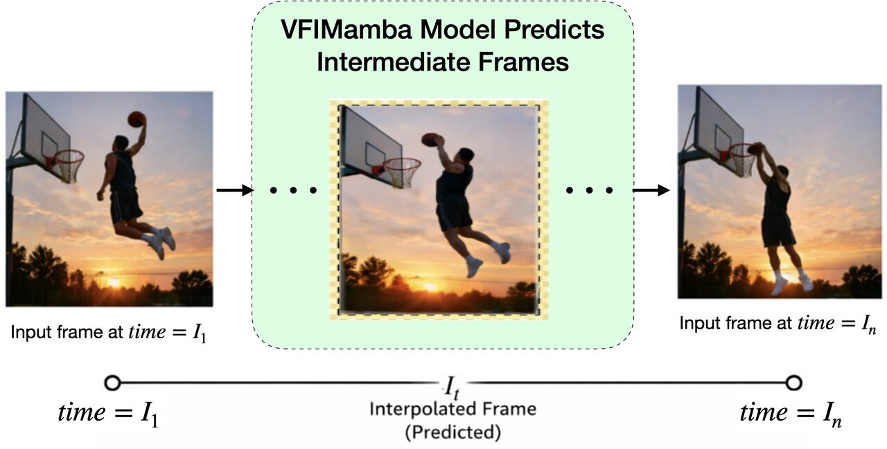

|
I am a Computer Science researcher and undergraduate at KLETech Center for Visual Intelligence (CEVI) , where I specialize in Human-Centric Computer Vision, 3D Vision, and Generative AI for Digital Humans. My research sits at the intersection of computer vision, graphics, and deep learning, with a core focus on synthesizing realistic Human-Object Interactions (HOI) and simulating physics-grounded Garment Deformation. Through my work, I build physics-guided deep learning frameworks to bridge virtual characters with the physical world. Some of my recent contributions include developing MDSim, a neural multi-layer draped garment simulator with differentiable inter-garment friction, and engineering Geometric Domain Adaptation pipelines for zero-shot human-object interaction synthesis on out-of-distribution 3D assets. I am also the creator of GRASP4Figs, an OCR-augmented, reward-conditioned captioning pipeline for scientific document understanding presented at ICVGIP 2026. I am honored to have been named the Global Runner-Up (2nd Place) at the CVPR NTIRE 2026 challenge for High-FPS Video Frame Interpolation, and to have co-authored research in melanoma classification (MK-DCSAU-Net) published in Springer Nature (ICETCI 2026). Technically, my research foundation is built on PyTorch, CUDA, Docker, and transformer-based diffusion architectures.
|

|
|
Primary Research Areas
My primary research areas include Computer Vision for
Human-Centric Computer Vision (3D Human Pose Estimation, HOI Synthesis, Character Motion Generation),
Garment Deformation & Simulation (Neural Multi-Layer Draped Garments, Differentiable Friction GNNs), and
3D Vision & Generative AI (Diffusion Models, SDS, SDF, Basis Point Sets).
Research and Projects
Recent Updates
Education
Experience
Publications & Research Projects
3D Vision & Garments
Praneel Nadgir et al.
Proposed a differentiable inter-garment friction framework for neural simulation of multi-layer draped garments (e.g., dupattas, sarees) on GNNs. Introduces a differentiable friction loss that penalizes tangential slip relative to normal forces, scaled by a material-conditioned friction predictor pretrained on textile data. Resolves the two-garment coupling instability and prevents draped clothing from sliding off SMPL bodies. 3D Vision & Garments
Praneel Nadgir, Yashas A B, Rashmi Adiveppa Khot, Uma Mudenagudi
Developed a Geometric Domain Adaptation pipeline integrating custom out-of-distribution 3D assets (e.g. Indian mythological weaponry like swords/spears) into the CHOIS framework. Employs a Topological Proxy Strategy to align geometry with training classes (e.g. clothes stands) and dynamically re-calibrates Signed Distance Fields (SDF) and Basis Point Sets (BPS). Eliminates the "Ghost Grasp" artifact, reducing hand penetration errors to a negligible 0.15 cm. 
Conference Paper
Praneel Nadgir et al.
Accepted at ICVGIP 2026. Focuses on paragraph-length analytical captioning of scientific plots and charts. Augments the BLIP vision-language model with a tokenized OCR-context injection mechanism and composite helpfulness/length rewards within a UDRL-HF reinforcement learning framework (Case 1). Identifies and mitigates mention-paragraph-induced grounding collapse (MPGC) in Qwen2.5-VL-7B using zero-shot visual-grounding prompts (Case 2). Deployed as a web application with an interactive chatbot. 
Conference Paper
Sneha Chinchakandi, Yashaswini Mellikeri, Praneel Nadgir, Yashas A B, Sumaiya Pathan
Proposes a Multi-Kernel split-attention U-Net (MK-DCSAU-Net) to handle scale variability of skin lesions using parallel $3\times3, 7\times7, 11\times11$ receptive fields. Implements a mathematical Blackout pipeline to filter out background dermoscopic noise (hair, ruler marks, gel residue) and incorporates a Spatial Attention Module (SAM) to enhance diagnosis, yielding a mean IoU of 0.8656 (+7.4% over baseline) and 0.8920 ROC-AUC.  Workshop Challenge
Praneel Nadgir et al.
Named the Global Runner-Up (2nd place) in the High-FPS Video Frame Interpolation (VFI) track at the CVPR NTIRE 2026 Workshop, achieving a 26.316 dB PSNR score. 
Challenge & Datathon
Praneel Nadgir
Developed models for neuroimaging-based classification tasks as part of the Women in Data Science (WiDS) Datathon 2025. |
|